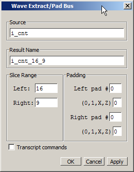

You can create
a new bus containing a slice of a selected bus using the following
procedure. This action uses the virtual signal command.
Procedure
- In the Wave window, locate
the bus and select the range of signals that you want to extract.
- Select (Hotkey:
Ctrl+e) to display the Wave Extract/Pad Bus Dialog Box.
Figure 1. Wave Extract/Pad Bus
Dialog Box
By default, the dialog box
is prepopulated with information based on your selection and will
create a new bus based on this information.
This dialog box also provides
you options to pad the selected slice into a larger bus.
- Click OK to create a group
of the extracted signals based on your changes, if any, to the dialog
box.